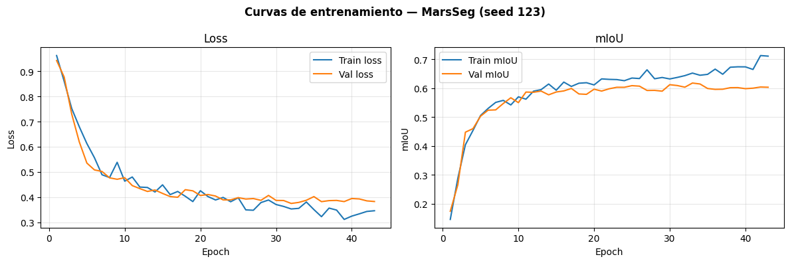
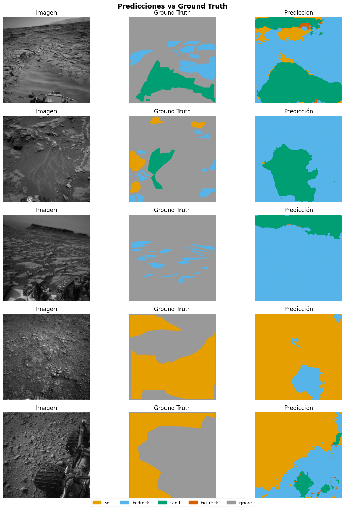

05c — MarsSeg (ResNet-50 + MiniASPP + PSA + SPPM)#
Paper: Li et al. — MarsSeg: Mars Surface Semantic Segmentation with Multi-level Extractor and Connector
arXiv: 2404.04155 — Beihang University, 2024
Arquitectura: Encoder-decoder basado en ResNet-50 con 3 módulos de mejora de características:
Mini-ASPP: captura detalles locales multi-escala en features superficiales
PSA (Polarized Self-Attention): dependencias globales canal + espacio
SPPM (Strip Pyramid Pooling Module): información semántica de alto nivel
layer4 con dilation=2 para no reducir resolución espacial
Advertencia: Alta varianza en big_rock (±0.054) — el más inestable de los 5 modelos. Supervisar las 3 seeds.
0. Setup#
import os, sys
from pathlib import Path
IN_COLAB = 'google.colab' in sys.modules
if IN_COLAB:
from google.colab import drive
drive.mount('/content/drive')
PROJECT_ROOT = Path('/content/drive/MyDrive/ai4mars_DL-v3')
sys.path.append(str(PROJECT_ROOT / 'notebooks'))
else:
PROJECT_ROOT = Path('__file__').resolve().parent.parent
if not (PROJECT_ROOT / 'processed').exists():
PROJECT_ROOT = Path.cwd().parent
print(f'ROOT: {PROJECT_ROOT} | existe: {PROJECT_ROOT.exists()}')
ROOT: C:\Users\User\Documents\DeepLearning\ai4mars_DL-v3 | existe: True
import torch
import torch.nn as nn
import torch.nn.functional as F
from torchvision.models import resnet50, ResNet50_Weights
import numpy as np
import matplotlib.pyplot as plt
from mars_utils import (
set_seed, load_norm_stats, load_split,
build_dataloaders, FocalDiceLoss,
train_one_epoch, evaluate, train_model, run_multi_seed,
append_benchmark_results, plot_best_seed_curves,
print_summary_table, visualize_predictions, count_parameters,
NUM_CLASSES, IGNORE_INDEX, SEEDS
)
DEVICE = torch.device('cuda' if torch.cuda.is_available() else 'cpu')
print(f'Device: {DEVICE}')
if DEVICE.type == 'cuda':
print(f'GPU: {torch.cuda.get_device_name(0)}')
Device: cuda
GPU: NVIDIA GeForce RTX 4050 Laptop GPU
1. Configuración#
MODEL_NAME = 'MarsSeg'
FAST_SUBSET = True # ← True para prueba rápida (~2 min/seed)
LR = 0.001
MOMENTUM = 0.9
WEIGHT_DECAY = 1e-4
MAX_EPOCHS = 80
PATIENCE = 10
BATCH_SIZE = 16
FOCAL_ALPHA = 0.25
FOCAL_GAMMA = 2.0
print(f'Modo: {"FAST SUBSET" if FAST_SUBSET else "PRODUCCIÓN"}')
Modo: FAST SUBSET
2. Datos#
df_train, df_val, df_gold = load_split()
mean, std = load_norm_stats()
# ← columna 'stem' no existe en el df; derivarla de image_path
train_ids = set(Path(p).stem for p in df_train['image_path'])
gold_ids = set(Path(p).stem for p in df_gold['image_path'])
assert len(train_ids & gold_ids) == 0, '⚠️ DATA LEAKAGE detectado'
print(f'✅ Train: {len(df_train)} | Val: {len(df_val)} | Gold: {len(df_gold)}')
print(f'Normalización — mean: {mean} | std: {std}')
✅ Split cargado — train: 4200 | val: 1800 | gold test: 322
✅ Train: 4200 | Val: 1800 | Gold: 322
Normalización — mean: [0.2303263779898021, 0.2303263779898021, 0.2303263779898021] | std: [0.10591342097577364, 0.10591342097577364, 0.10591342097577364]
3. Arquitectura — MarsSeg#
3.1 Módulos de mejora de características#
class MiniASPP(nn.Module):
"""
Mini Atrous Spatial Pyramid Pooling.
3 ramas de convolución dilatada (rates 1,1,2) para capturar
representaciones multi-escala locales de forma eficiente.
Diseñado para feature maps de alta resolución (superficiales).
"""
def __init__(self, in_channels: int, out_channels: int):
super().__init__()
mid = out_channels // 3
self.branch1 = nn.Sequential(
nn.Conv2d(in_channels, mid, 1, bias=False),
nn.BatchNorm2d(mid), nn.ReLU(inplace=True)
)
self.branch2 = nn.Sequential(
nn.Conv2d(in_channels, mid, 3, padding=1, dilation=1, bias=False),
nn.BatchNorm2d(mid), nn.ReLU(inplace=True)
)
self.branch3 = nn.Sequential(
nn.Conv2d(in_channels, mid, 3, padding=2, dilation=2, bias=False),
nn.BatchNorm2d(mid), nn.ReLU(inplace=True)
)
# Ajuste de canales tras concatenación
concat_ch = mid * 3
self.fuse = nn.Sequential(
nn.Conv2d(concat_ch, out_channels, 1, bias=False),
nn.BatchNorm2d(out_channels), nn.ReLU(inplace=True)
)
def forward(self, x):
b1 = self.branch1(x)
b2 = self.branch2(x)
b3 = self.branch3(x)
return self.fuse(torch.cat([b1, b2, b3], dim=1))
class PolarizedSelfAttention(nn.Module):
"""
Polarized Self-Attention (PSA).
Atiende tanto a la dimensión de canal como a la espacial
mediante auto-atención ligera paralela.
"""
def __init__(self, channels: int):
super().__init__()
self.ch_half = channels // 2
# Rama canal
self.ch_q = nn.Conv2d(channels, self.ch_half, 1)
self.ch_v = nn.Conv2d(channels, self.ch_half, 1)
# Rama espacial
self.sp_q = nn.Conv2d(channels, 1, 1)
self.sp_v = nn.Conv2d(channels, self.ch_half, 1)
self.norm_ch = nn.LayerNorm([self.ch_half, 1, 1])
self.fuse = nn.Conv2d(self.ch_half, channels, 1)
def forward(self, x):
B, C, H, W = x.shape
# Atención de canal
q_ch = self.ch_q(x).reshape(B, self.ch_half, -1) # (B, C/2, HW)
v_ch = self.ch_v(x).reshape(B, self.ch_half, -1) # (B, C/2, HW)
attn_ch = F.softmax(q_ch, dim=-1) # (B, C/2, HW)
ch_out = (v_ch * attn_ch).sum(dim=-1, keepdim=True) # (B, C/2, 1)
ch_out = ch_out.unsqueeze(-1) # (B, C/2, 1, 1)
ch_out = torch.sigmoid(self.norm_ch(ch_out)) # (B, C/2, 1, 1)
# Atención espacial
q_sp = self.sp_q(x).reshape(B, 1, -1) # (B, 1, HW)
v_sp = self.sp_v(x).reshape(B, self.ch_half, -1) # (B, C/2, HW)
attn_sp = F.softmax(q_sp, dim=-1) # (B, 1, HW)
sp_out = (v_sp * attn_sp).sum(dim=-1) # (B, C/2)
sp_out = torch.sigmoid(sp_out).reshape(B, self.ch_half, 1, 1) # (B, C/2, 1, 1)
# Combinar y proyectar
combined = ch_out * sp_out # (B, C/2, 1, 1)
return x + self.fuse(combined)
class SPPM(nn.Module):
"""
Strip Pyramid Pooling Module.
Combina pooling global multi-escala (1×1, 2×2, 4×4, 8×8) con
pooling en franja (1×W y H×1) para capturar información semántica
de categorías a múltiples escalas, incluido terreno en franja.
"""
def __init__(self, in_channels: int, out_channels: int):
super().__init__()
# Reducción de canales antes del pooling
self.reduce = nn.Sequential(
nn.Conv2d(in_channels, out_channels, 1, bias=False),
nn.BatchNorm2d(out_channels), nn.ReLU(inplace=True)
)
# Ramas de pooling multi-escala
self.pools = nn.ModuleList([
nn.AdaptiveAvgPool2d(s) for s in [1, 2, 4, 8]
])
n_branches = len(self.pools) + 2 # +2 por strip H y W
self.fuse = nn.Sequential(
nn.Conv2d(out_channels * (1 + n_branches), out_channels, 1, bias=False),
nn.BatchNorm2d(out_channels), nn.ReLU(inplace=True)
)
def forward(self, x):
x_r = self.reduce(x)
H, W = x_r.shape[-2:]
parts = [x_r]
for pool in self.pools:
parts.append(
F.interpolate(pool(x_r), size=(H, W), mode='bilinear', align_corners=False)
)
# Strip pooling H y W
strip_h = F.adaptive_avg_pool2d(x_r, (1, W))
strip_w = F.adaptive_avg_pool2d(x_r, (H, 1))
parts.append(F.interpolate(strip_h, (H, W), mode='bilinear', align_corners=False))
parts.append(F.interpolate(strip_w, (H, W), mode='bilinear', align_corners=False))
return self.fuse(torch.cat(parts, dim=1))
class MarsSeg(nn.Module):
"""
MarsSeg: encoder-decoder con ResNet-50 y capas de mejora de características.
Flujo:
Input [B,3,256,256]
↓ ResNet-50 layer1 (C=256, H/4×W/4) → MiniASPP + PSA → feat1
↓ ResNet-50 layer2 (C=512, H/8×W/8) → MiniASPP + PSA → feat2
↓ ResNet-50 layer3 (C=1024, H/16×W/16) → MiniASPP + PSA → feat3
↓ ResNet-50 layer4 (C=2048, dilation=2, H/16×W/16) → SPPM → feat4
↓ Decoder: upsample + concat + conv × 2 → logits [B,4,256,256]
Solo se usan los 3 primeros feature maps (shallow) con dilation en layer4.
"""
def __init__(self, num_classes: int = 4):
super().__init__()
# --- Encoder: ResNet-50 con dilation en layer4 ---
backbone = resnet50(weights=ResNet50_Weights.DEFAULT)
self.layer0 = nn.Sequential(backbone.conv1, backbone.bn1,
backbone.relu, backbone.maxpool)
self.layer1 = backbone.layer1 # out: 256ch, H/4
self.layer2 = backbone.layer2 # out: 512ch, H/8
self.layer3 = backbone.layer3 # out: 1024ch, H/16
# layer4 con dilation=2 para mantener resolución H/16
self.layer4 = backbone.layer4
self._set_dilation(self.layer4, dilation=2)
# --- Feature Enhancement ---
self.mini_aspp1 = MiniASPP(256, 128)
self.psa1 = PolarizedSelfAttention(128)
self.mini_aspp2 = MiniASPP(512, 256)
self.psa2 = PolarizedSelfAttention(256)
self.mini_aspp3 = MiniASPP(1024, 512)
self.psa3 = PolarizedSelfAttention(512)
self.sppm = SPPM(2048, 512)
# --- Decoder ---
# Capa 4 (H/16, 512) + Capa 3 (H/16, 512) → fusión
self.fuse43 = self._conv_block(512 + 512, 256)
# Upsample a H/8 + Capa 2 (H/8, 256)
self.fuse2 = self._conv_block(256 + 256, 128)
# Upsample a H/4 + Capa 1 (H/4, 128)
self.fuse1 = self._conv_block(128 + 128, 64)
# Upsample a H×W → clasificador final
self.head = nn.Conv2d(64, num_classes, 1)
@staticmethod
def _set_dilation(layer, dilation: int):
"""Aplica dilation a todas las conv 3×3 de un bloque residual."""
for m in layer.modules():
if isinstance(m, nn.Conv2d) and m.kernel_size == (3, 3):
m.dilation = (dilation, dilation)
m.padding = (dilation, dilation)
m.stride = (1, 1)
elif isinstance(m, nn.Conv2d) and m.stride == (2, 2):
m.stride = (1, 1)
@staticmethod
def _conv_block(in_ch, out_ch):
return nn.Sequential(
nn.Conv2d(in_ch, out_ch, 3, padding=1, bias=False),
nn.BatchNorm2d(out_ch), nn.ReLU(inplace=True)
)
def forward(self, x):
H, W = x.shape[-2:]
# Encoder
x0 = self.layer0(x) # H/4
x1 = self.layer1(x0) # H/4, 256ch
x2 = self.layer2(x1) # H/8, 512ch
x3 = self.layer3(x2) # H/16, 1024ch
x4 = self.layer4(x3) # H/16, 2048ch (dilation=2)
# Feature enhancement
f1 = self.psa1(self.mini_aspp1(x1)) # H/4, 128ch
f2 = self.psa2(self.mini_aspp2(x2)) # H/8, 256ch
f3 = self.psa3(self.mini_aspp3(x3)) # H/16, 512ch
f4 = self.sppm(x4) # H/16, 512ch
# Decoder
d43 = self.fuse43(torch.cat([f4, f3], dim=1)) # H/16, 256ch
d43_up = F.interpolate(d43, size=f2.shape[-2:],
mode='bilinear', align_corners=False)
d2 = self.fuse2(torch.cat([d43_up, f2], dim=1)) # H/8, 128ch
d2_up = F.interpolate(d2, size=f1.shape[-2:],
mode='bilinear', align_corners=False)
d1 = self.fuse1(torch.cat([d2_up, f1], dim=1)) # H/4, 64ch
out = F.interpolate(self.head(d1), size=(H, W),
mode='bilinear', align_corners=False) # H×W, 4ch
return out
def build_model():
return MarsSeg(num_classes=NUM_CLASSES).to(DEVICE)
# Verificación
_m = build_model()
_m.eval()
with torch.no_grad():
_x = torch.randn(2, 3, 256, 256).to(DEVICE)
_out = _m(_x)
print(f'Forward OK — salida: {_out.shape}') # (2, 4, 256, 256)
n_params = count_parameters(_m)
print(f'Parámetros entrenables: {n_params:.2f}M (referencia KB: ~38.61M)')
del _m, _x, _out
Forward OK — salida: torch.Size([2, 4, 256, 256])
Parámetros entrenables: 34.87M (referencia KB: ~38.61M)
4. Loss, Optimizer y Scheduler#
def criterion_fn():
# FocalDiceLoss — combina Focal + Dice para class imbalance
return FocalDiceLoss(alpha=FOCAL_ALPHA, gamma=FOCAL_GAMMA,
ignore_index=IGNORE_INDEX)
def optimizer_fn(params):
return torch.optim.SGD(
params, lr=LR, momentum=MOMENTUM, weight_decay=WEIGHT_DECAY
)
def scheduler_fn(optimizer):
return torch.optim.lr_scheduler.PolynomialLR(
optimizer, total_iters=MAX_EPOCHS, power=0.9
)
print('✅ Loss: FocalDiceLoss (α=0.25, γ=2.0)')
print(' Optimizer: SGD (lr=0.001, momentum=0.9, wd=1e-4)')
print(' Scheduler: PolynomialLR (power=0.9)')
✅ Loss: FocalDiceLoss (α=0.25, γ=2.0)
Optimizer: SGD (lr=0.001, momentum=0.9, wd=1e-4)
Scheduler: PolynomialLR (power=0.9)
5. Entrenamiento Multi-Seed#
summary = run_multi_seed(
model_fn = build_model,
df_train = df_train,
df_val = df_val,
df_gold = df_gold,
criterion_fn = criterion_fn,
optimizer_fn = optimizer_fn,
scheduler_fn = scheduler_fn,
model_name = MODEL_NAME,
device = DEVICE,
num_epochs = MAX_EPOCHS,
patience = PATIENCE,
batch_size = BATCH_SIZE,
fast_subset = FAST_SUBSET,
n_train_fast = 200,
n_val_fast = 50,
)
───────────────────────────────────────────────────────
Seed 42 | MarsSeg
⚡ Subset rápido — train: 200 | val: 50
(Para entrenamiento real usar df_train y df_val completos)
Entrenamiento desde cero
============================================================
MarsSeg_seed42 | device=cuda | AMP=True
epochs=80 | patience=10 | aux_weight=0.0
============================================================
Ep 1/80 | loss=0.9868 mIoU=0.1124 | val_loss=0.9478 val_mIoU=0.1026 | rock=0.0107
Ep 2/80 | loss=0.8779 mIoU=0.2208 | val_loss=0.9001 val_mIoU=0.1773 | rock=0.0139
Ep 3/80 | loss=0.7840 mIoU=0.3453 | val_loss=0.7793 val_mIoU=0.3373 | rock=0.0247
Ep 4/80 | loss=0.7077 mIoU=0.4090 | val_loss=0.7050 val_mIoU=0.3884 | rock=0.0304
Ep 5/80 | loss=0.6613 mIoU=0.4500 | val_loss=0.5882 val_mIoU=0.4930 | rock=0.0057
Checkpoint periódico guardado (epoch 5)
Ep 6/80 | loss=0.6214 mIoU=0.4597 | val_loss=0.4976 val_mIoU=0.5673 | rock=0.0035
Ep 7/80 | loss=0.6296 mIoU=0.4930 | val_loss=0.5247 val_mIoU=0.5424 | rock=0.0137
Ep 8/80 | loss=0.5758 mIoU=0.5172 | val_loss=0.5239 val_mIoU=0.5365 | rock=0.0030
Ep 9/80 | loss=0.5843 mIoU=0.5203 | val_loss=0.4529 val_mIoU=0.5751 | rock=0.0060
Ep 10/80 | loss=0.5571 mIoU=0.5255 | val_loss=0.4276 val_mIoU=0.5793 | rock=0.0038
Checkpoint periódico guardado (epoch 10)
Ep 11/80 | loss=0.5403 mIoU=0.5235 | val_loss=0.4070 val_mIoU=0.5846 | rock=0.0009
Ep 12/80 | loss=0.5179 mIoU=0.5571 | val_loss=0.4076 val_mIoU=0.5854 | rock=0.0011
Ep 13/80 | loss=0.5018 mIoU=0.5541 | val_loss=0.3833 val_mIoU=0.6038 | rock=0.0029
Ep 14/80 | loss=0.5092 mIoU=0.5618 | val_loss=0.4092 val_mIoU=0.5768 | rock=0.0060
Ep 15/80 | loss=0.4671 mIoU=0.5789 | val_loss=0.4095 val_mIoU=0.5651 | rock=0.0042
Checkpoint periódico guardado (epoch 15)
Ep 16/80 | loss=0.4804 mIoU=0.5727 | val_loss=0.3695 val_mIoU=0.5877 | rock=0.0074
Ep 17/80 | loss=0.4581 mIoU=0.5901 | val_loss=0.3396 val_mIoU=0.6200 | rock=0.0175
Ep 18/80 | loss=0.4152 mIoU=0.5948 | val_loss=0.3505 val_mIoU=0.6096 | rock=0.0160
Ep 19/80 | loss=0.4739 mIoU=0.5779 | val_loss=0.3581 val_mIoU=0.6058 | rock=0.0178
Ep 20/80 | loss=0.4082 mIoU=0.6094 | val_loss=0.3530 val_mIoU=0.6132 | rock=0.0141
Checkpoint periódico guardado (epoch 20)
Ep 21/80 | loss=0.4066 mIoU=0.6064 | val_loss=0.3552 val_mIoU=0.6026 | rock=0.0224
Ep 22/80 | loss=0.4457 mIoU=0.6202 | val_loss=0.3438 val_mIoU=0.6157 | rock=0.0207
Ep 23/80 | loss=0.4271 mIoU=0.6185 | val_loss=0.3356 val_mIoU=0.6256 | rock=0.0453
Ep 24/80 | loss=0.4278 mIoU=0.6041 | val_loss=0.3293 val_mIoU=0.6174 | rock=0.0261
Ep 25/80 | loss=0.4235 mIoU=0.6313 | val_loss=0.3322 val_mIoU=0.6191 | rock=0.0520
Checkpoint periódico guardado (epoch 25)
Ep 26/80 | loss=0.4227 mIoU=0.6267 | val_loss=0.3040 val_mIoU=0.6500 | rock=0.0699
Ep 27/80 | loss=0.3786 mIoU=0.6539 | val_loss=0.3138 val_mIoU=0.6505 | rock=0.1048
Ep 28/80 | loss=0.3765 mIoU=0.6814 | val_loss=0.3210 val_mIoU=0.6328 | rock=0.0770
Ep 29/80 | loss=0.3951 mIoU=0.6707 | val_loss=0.3197 val_mIoU=0.6373 | rock=0.0721
Ep 30/80 | loss=0.3986 mIoU=0.6825 | val_loss=0.3051 val_mIoU=0.6569 | rock=0.1158
Checkpoint periódico guardado (epoch 30)
Ep 31/80 | loss=0.3632 mIoU=0.7101 | val_loss=0.3169 val_mIoU=0.6521 | rock=0.1861
Ep 32/80 | loss=0.3609 mIoU=0.7049 | val_loss=0.3122 val_mIoU=0.6539 | rock=0.1723
Ep 33/80 | loss=0.3821 mIoU=0.7317 | val_loss=0.2877 val_mIoU=0.6782 | rock=0.1812
Ep 34/80 | loss=0.3222 mIoU=0.7307 | val_loss=0.2946 val_mIoU=0.6717 | rock=0.1667
Ep 35/80 | loss=0.3678 mIoU=0.7275 | val_loss=0.2912 val_mIoU=0.6859 | rock=0.2314
Checkpoint periódico guardado (epoch 35)
Ep 36/80 | loss=0.3304 mIoU=0.7486 | val_loss=0.3076 val_mIoU=0.6742 | rock=0.2204
Ep 37/80 | loss=0.3441 mIoU=0.7528 | val_loss=0.3158 val_mIoU=0.6683 | rock=0.2146
Ep 38/80 | loss=0.3736 mIoU=0.7449 | val_loss=0.2995 val_mIoU=0.6809 | rock=0.2390
Ep 39/80 | loss=0.3506 mIoU=0.7561 | val_loss=0.2787 val_mIoU=0.6969 | rock=0.2636
Ep 40/80 | loss=0.3384 mIoU=0.7445 | val_loss=0.3012 val_mIoU=0.6878 | rock=0.2680
Checkpoint periódico guardado (epoch 40)
Ep 41/80 | loss=0.3049 mIoU=0.7284 | val_loss=0.3048 val_mIoU=0.6896 | rock=0.2852
Ep 42/80 | loss=0.3269 mIoU=0.7653 | val_loss=0.2909 val_mIoU=0.6853 | rock=0.2657
Ep 43/80 | loss=0.3266 mIoU=0.7616 | val_loss=0.3000 val_mIoU=0.6744 | rock=0.2622
Ep 44/80 | loss=0.3046 mIoU=0.7811 | val_loss=0.2917 val_mIoU=0.6822 | rock=0.2677
Ep 45/80 | loss=0.2904 mIoU=0.7999 | val_loss=0.3007 val_mIoU=0.6751 | rock=0.2589
Checkpoint periódico guardado (epoch 45)
Ep 46/80 | loss=0.2825 mIoU=0.7870 | val_loss=0.2973 val_mIoU=0.6705 | rock=0.2331
Ep 47/80 | loss=0.3522 mIoU=0.7721 | val_loss=0.2848 val_mIoU=0.6791 | rock=0.2484
Ep 48/80 | loss=0.2599 mIoU=0.8058 | val_loss=0.2712 val_mIoU=0.6896 | rock=0.2298
Ep 49/80 | loss=0.2954 mIoU=0.8039 | val_loss=0.2936 val_mIoU=0.6741 | rock=0.2136
Early stopping en epoch 49 (sin mejora por 10 epochs)
Mejor val mIoU=0.6969 (epoch 39) | tiempo=233s
Checkpoint periódico eliminado
Gold test mIoU=0.7051
Progreso guardado (1/3 seeds)
───────────────────────────────────────────────────────
Seed 123 | MarsSeg
⚡ Subset rápido — train: 200 | val: 50
(Para entrenamiento real usar df_train y df_val completos)
Entrenamiento desde cero
============================================================
MarsSeg_seed123 | device=cuda | AMP=True
epochs=80 | patience=10 | aux_weight=0.0
============================================================
Ep 1/80 | loss=0.9621 mIoU=0.1455 | val_loss=0.9424 val_mIoU=0.1737 | rock=0.0000
Ep 2/80 | loss=0.8600 mIoU=0.2881 | val_loss=0.8768 val_mIoU=0.2655 | rock=0.0002
Ep 3/80 | loss=0.7516 mIoU=0.4041 | val_loss=0.7296 val_mIoU=0.4476 | rock=0.0000
Ep 4/80 | loss=0.6793 mIoU=0.4535 | val_loss=0.6191 val_mIoU=0.4598 | rock=0.0000
Ep 5/80 | loss=0.6128 mIoU=0.5053 | val_loss=0.5352 val_mIoU=0.5029 | rock=0.0000
Checkpoint periódico guardado (epoch 5)
Ep 6/80 | loss=0.5565 mIoU=0.5298 | val_loss=0.5082 val_mIoU=0.5238 | rock=0.0000
Ep 7/80 | loss=0.4890 mIoU=0.5507 | val_loss=0.5020 val_mIoU=0.5248 | rock=0.0000
Ep 8/80 | loss=0.4779 mIoU=0.5577 | val_loss=0.4767 val_mIoU=0.5469 | rock=0.0000
Ep 9/80 | loss=0.5384 mIoU=0.5419 | val_loss=0.4710 val_mIoU=0.5667 | rock=0.0000
Ep 10/80 | loss=0.4633 mIoU=0.5699 | val_loss=0.4772 val_mIoU=0.5499 | rock=0.0000
Checkpoint periódico guardado (epoch 10)
Ep 11/80 | loss=0.4800 mIoU=0.5619 | val_loss=0.4458 val_mIoU=0.5864 | rock=0.0000
Ep 12/80 | loss=0.4400 mIoU=0.5896 | val_loss=0.4340 val_mIoU=0.5858 | rock=0.0000
Ep 13/80 | loss=0.4384 mIoU=0.5949 | val_loss=0.4227 val_mIoU=0.5899 | rock=0.0000
Ep 14/80 | loss=0.4204 mIoU=0.6143 | val_loss=0.4284 val_mIoU=0.5769 | rock=0.0000
Ep 15/80 | loss=0.4489 mIoU=0.5928 | val_loss=0.4148 val_mIoU=0.5867 | rock=0.0000
Checkpoint periódico guardado (epoch 15)
Ep 16/80 | loss=0.4101 mIoU=0.6210 | val_loss=0.4024 val_mIoU=0.5904 | rock=0.0000
Ep 17/80 | loss=0.4226 mIoU=0.6060 | val_loss=0.3996 val_mIoU=0.5990 | rock=0.0000
Ep 18/80 | loss=0.4036 mIoU=0.6171 | val_loss=0.4296 val_mIoU=0.5799 | rock=0.0000
Ep 19/80 | loss=0.3824 mIoU=0.6188 | val_loss=0.4251 val_mIoU=0.5786 | rock=0.0000
Ep 20/80 | loss=0.4255 mIoU=0.6112 | val_loss=0.4066 val_mIoU=0.5964 | rock=0.0000
Checkpoint periódico guardado (epoch 20)
Ep 21/80 | loss=0.4023 mIoU=0.6321 | val_loss=0.4105 val_mIoU=0.5899 | rock=0.0000
Ep 22/80 | loss=0.3889 mIoU=0.6304 | val_loss=0.4045 val_mIoU=0.5979 | rock=0.0000
Ep 23/80 | loss=0.3989 mIoU=0.6297 | val_loss=0.3892 val_mIoU=0.6030 | rock=0.0000
Ep 24/80 | loss=0.3818 mIoU=0.6258 | val_loss=0.3892 val_mIoU=0.6030 | rock=0.0000
Ep 25/80 | loss=0.3974 mIoU=0.6350 | val_loss=0.3981 val_mIoU=0.6086 | rock=0.0000
Checkpoint periódico guardado (epoch 25)
Ep 26/80 | loss=0.3495 mIoU=0.6333 | val_loss=0.3925 val_mIoU=0.6070 | rock=0.0000
Ep 27/80 | loss=0.3480 mIoU=0.6635 | val_loss=0.3944 val_mIoU=0.5920 | rock=0.0000
Ep 28/80 | loss=0.3785 mIoU=0.6326 | val_loss=0.3873 val_mIoU=0.5924 | rock=0.0000
Ep 29/80 | loss=0.3886 mIoU=0.6370 | val_loss=0.4069 val_mIoU=0.5896 | rock=0.0000
Ep 30/80 | loss=0.3708 mIoU=0.6319 | val_loss=0.3870 val_mIoU=0.6120 | rock=0.0000
Checkpoint periódico guardado (epoch 30)
Ep 31/80 | loss=0.3631 mIoU=0.6372 | val_loss=0.3866 val_mIoU=0.6090 | rock=0.0000
Ep 32/80 | loss=0.3532 mIoU=0.6434 | val_loss=0.3750 val_mIoU=0.6034 | rock=0.0000
Ep 33/80 | loss=0.3555 mIoU=0.6522 | val_loss=0.3791 val_mIoU=0.6177 | rock=0.0000
Ep 34/80 | loss=0.3807 mIoU=0.6447 | val_loss=0.3877 val_mIoU=0.6144 | rock=0.0000
Ep 35/80 | loss=0.3506 mIoU=0.6478 | val_loss=0.4022 val_mIoU=0.5989 | rock=0.0000
Checkpoint periódico guardado (epoch 35)
Ep 36/80 | loss=0.3225 mIoU=0.6659 | val_loss=0.3822 val_mIoU=0.5958 | rock=0.0000
Ep 37/80 | loss=0.3565 mIoU=0.6481 | val_loss=0.3862 val_mIoU=0.5964 | rock=0.0003
Ep 38/80 | loss=0.3486 mIoU=0.6725 | val_loss=0.3870 val_mIoU=0.6016 | rock=0.0007
Ep 39/80 | loss=0.3116 mIoU=0.6739 | val_loss=0.3824 val_mIoU=0.6019 | rock=0.0000
Ep 40/80 | loss=0.3247 mIoU=0.6737 | val_loss=0.3946 val_mIoU=0.5982 | rock=0.0016
Checkpoint periódico guardado (epoch 40)
Ep 41/80 | loss=0.3337 mIoU=0.6648 | val_loss=0.3929 val_mIoU=0.5999 | rock=0.0001
Ep 42/80 | loss=0.3433 mIoU=0.7128 | val_loss=0.3852 val_mIoU=0.6039 | rock=0.0031
Ep 43/80 | loss=0.3461 mIoU=0.7109 | val_loss=0.3827 val_mIoU=0.6031 | rock=0.0016
Early stopping en epoch 43 (sin mejora por 10 epochs)
Mejor val mIoU=0.6177 (epoch 33) | tiempo=221s
Checkpoint periódico eliminado
Gold test mIoU=0.7446
Progreso guardado (2/3 seeds)
───────────────────────────────────────────────────────
Seed 7 | MarsSeg
⚡ Subset rápido — train: 200 | val: 50
(Para entrenamiento real usar df_train y df_val completos)
Entrenamiento desde cero
============================================================
MarsSeg_seed7 | device=cuda | AMP=True
epochs=80 | patience=10 | aux_weight=0.0
============================================================
Ep 1/80 | loss=0.9776 mIoU=0.1463 | val_loss=0.9752 val_mIoU=0.1354 | rock=0.0013
Ep 2/80 | loss=0.8574 mIoU=0.3176 | val_loss=0.9193 val_mIoU=0.3351 | rock=0.0024
Ep 3/80 | loss=0.7568 mIoU=0.4483 | val_loss=0.8150 val_mIoU=0.4786 | rock=0.0079
Ep 4/80 | loss=0.6401 mIoU=0.5256 | val_loss=0.7474 val_mIoU=0.4842 | rock=0.0026
Ep 5/80 | loss=0.6078 mIoU=0.5273 | val_loss=0.6276 val_mIoU=0.5482 | rock=0.0019
Checkpoint periódico guardado (epoch 5)
Ep 6/80 | loss=0.5291 mIoU=0.5565 | val_loss=0.5694 val_mIoU=0.5704 | rock=0.0000
Ep 7/80 | loss=0.5365 mIoU=0.5436 | val_loss=0.5419 val_mIoU=0.5883 | rock=0.0000
Ep 8/80 | loss=0.5009 mIoU=0.5793 | val_loss=0.5191 val_mIoU=0.6091 | rock=0.0000
Ep 9/80 | loss=0.5022 mIoU=0.5641 | val_loss=0.5116 val_mIoU=0.6056 | rock=0.0000
Ep 10/80 | loss=0.4364 mIoU=0.5911 | val_loss=0.5114 val_mIoU=0.6032 | rock=0.0000
Checkpoint periódico guardado (epoch 10)
Ep 11/80 | loss=0.3800 mIoU=0.6149 | val_loss=0.5133 val_mIoU=0.6041 | rock=0.0000
Ep 12/80 | loss=0.4640 mIoU=0.5873 | val_loss=0.4921 val_mIoU=0.6260 | rock=0.0000
Ep 13/80 | loss=0.4372 mIoU=0.6034 | val_loss=0.4916 val_mIoU=0.6212 | rock=0.0000
Ep 14/80 | loss=0.4446 mIoU=0.6045 | val_loss=0.4899 val_mIoU=0.6179 | rock=0.0000
Ep 15/80 | loss=0.3937 mIoU=0.6173 | val_loss=0.4654 val_mIoU=0.6252 | rock=0.0000
Checkpoint periódico guardado (epoch 15)
Ep 16/80 | loss=0.4039 mIoU=0.6077 | val_loss=0.4691 val_mIoU=0.6271 | rock=0.0000
Ep 17/80 | loss=0.4471 mIoU=0.5980 | val_loss=0.4576 val_mIoU=0.6287 | rock=0.0000
Ep 18/80 | loss=0.4126 mIoU=0.6281 | val_loss=0.4579 val_mIoU=0.6290 | rock=0.0000
Ep 19/80 | loss=0.3852 mIoU=0.6411 | val_loss=0.4710 val_mIoU=0.6137 | rock=0.0000
Ep 20/80 | loss=0.4096 mIoU=0.6210 | val_loss=0.4619 val_mIoU=0.6246 | rock=0.0000
Checkpoint periódico guardado (epoch 20)
Ep 21/80 | loss=0.4196 mIoU=0.6353 | val_loss=0.4405 val_mIoU=0.6337 | rock=0.0000
Ep 22/80 | loss=0.3915 mIoU=0.6300 | val_loss=0.4460 val_mIoU=0.6348 | rock=0.0000
Ep 23/80 | loss=0.3682 mIoU=0.6383 | val_loss=0.4398 val_mIoU=0.6332 | rock=0.0000
Ep 24/80 | loss=0.3873 mIoU=0.6288 | val_loss=0.4373 val_mIoU=0.6333 | rock=0.0000
Ep 25/80 | loss=0.3856 mIoU=0.6419 | val_loss=0.4469 val_mIoU=0.6301 | rock=0.0000
Checkpoint periódico guardado (epoch 25)
Ep 26/80 | loss=0.3686 mIoU=0.6374 | val_loss=0.4547 val_mIoU=0.6318 | rock=0.0000
Ep 27/80 | loss=0.3368 mIoU=0.6523 | val_loss=0.4473 val_mIoU=0.6305 | rock=0.0000
Ep 28/80 | loss=0.4167 mIoU=0.6116 | val_loss=0.4482 val_mIoU=0.6297 | rock=0.0000
Ep 29/80 | loss=0.3909 mIoU=0.6445 | val_loss=0.4372 val_mIoU=0.6279 | rock=0.0000
Ep 30/80 | loss=0.3416 mIoU=0.6554 | val_loss=0.4339 val_mIoU=0.6354 | rock=0.0000
Checkpoint periódico guardado (epoch 30)
Ep 31/80 | loss=0.3770 mIoU=0.6488 | val_loss=0.4402 val_mIoU=0.6254 | rock=0.0000
Ep 32/80 | loss=0.3539 mIoU=0.6558 | val_loss=0.4432 val_mIoU=0.6249 | rock=0.0000
Ep 33/80 | loss=0.3312 mIoU=0.6605 | val_loss=0.4543 val_mIoU=0.6240 | rock=0.0000
Ep 34/80 | loss=0.3772 mIoU=0.6386 | val_loss=0.4432 val_mIoU=0.6302 | rock=0.0000
Ep 35/80 | loss=0.3735 mIoU=0.6604 | val_loss=0.4304 val_mIoU=0.6379 | rock=0.0000
Checkpoint periódico guardado (epoch 35)
Ep 36/80 | loss=0.3159 mIoU=0.6684 | val_loss=0.4391 val_mIoU=0.6272 | rock=0.0000
Ep 37/80 | loss=0.3216 mIoU=0.6552 | val_loss=0.4335 val_mIoU=0.6337 | rock=0.0000
Ep 38/80 | loss=0.3399 mIoU=0.6509 | val_loss=0.4347 val_mIoU=0.6330 | rock=0.0000
Ep 39/80 | loss=0.3499 mIoU=0.6583 | val_loss=0.4320 val_mIoU=0.6351 | rock=0.0000
Ep 40/80 | loss=0.3393 mIoU=0.6748 | val_loss=0.4284 val_mIoU=0.6376 | rock=0.0000
Checkpoint periódico guardado (epoch 40)
Ep 41/80 | loss=0.3384 mIoU=0.6746 | val_loss=0.4248 val_mIoU=0.6404 | rock=0.0000
Ep 42/80 | loss=0.3197 mIoU=0.6489 | val_loss=0.4112 val_mIoU=0.6442 | rock=0.0000
Ep 43/80 | loss=0.3372 mIoU=0.6673 | val_loss=0.4127 val_mIoU=0.6435 | rock=0.0000
Ep 44/80 | loss=0.3496 mIoU=0.6284 | val_loss=0.4271 val_mIoU=0.6315 | rock=0.0000
Ep 45/80 | loss=0.3189 mIoU=0.6603 | val_loss=0.4238 val_mIoU=0.6342 | rock=0.0000
Checkpoint periódico guardado (epoch 45)
Ep 46/80 | loss=0.3656 mIoU=0.6440 | val_loss=0.4179 val_mIoU=0.6286 | rock=0.0000
Ep 47/80 | loss=0.3503 mIoU=0.6622 | val_loss=0.4345 val_mIoU=0.6169 | rock=0.0000
Ep 48/80 | loss=0.2998 mIoU=0.6671 | val_loss=0.4244 val_mIoU=0.6296 | rock=0.0000
Ep 49/80 | loss=0.2848 mIoU=0.6722 | val_loss=0.4297 val_mIoU=0.6294 | rock=0.0000
Ep 50/80 | loss=0.3141 mIoU=0.6821 | val_loss=0.4189 val_mIoU=0.6373 | rock=0.0000
Checkpoint periódico guardado (epoch 50)
Ep 51/80 | loss=0.3467 mIoU=0.6625 | val_loss=0.4233 val_mIoU=0.6369 | rock=0.0000
Ep 52/80 | loss=0.3145 mIoU=0.6749 | val_loss=0.4156 val_mIoU=0.6409 | rock=0.0000
Early stopping en epoch 52 (sin mejora por 10 epochs)
Mejor val mIoU=0.6442 (epoch 42) | tiempo=269s
Checkpoint periódico eliminado
Gold test mIoU=0.6667
Progreso guardado (3/3 seeds)
============================================================
MarsSeg: mIoU=0.7054 ± 0.0318 IC95=±0.0360
IoU(soil )=0.9145 ± 0.0192
IoU(bedrock )=0.8714 ± 0.0214
IoU(sand )=0.8627 ± 0.0180
IoU(big_rock )=0.1731 ± 0.1233
============================================================
Archivo de progreso eliminado (todos los seeds completados)
6. Resultados Agregados#
print_summary_table(summary)
============================================================
RESUMEN — MarsSeg
============================================================
Métrica Media Std IC95
------------------------------------------------
mIoU 0.7054 0.0318 ± 0.0360
Pixel Accuracy 0.9416
------------------------------------------------
IoU soil 0.9145 0.0192
IoU bedrock 0.8714 0.0214
IoU sand 0.8627 0.0180
IoU big_rock 0.1731 0.1233
------------------------------------------------
Params (M) —
Tiempo medio (s) 241
Epoch mejor (mean) 38.0
============================================================
plot_best_seed_curves(summary)

import pandas as pd
# Eliminar filas anteriores del mismo modelo si existen
from mars_utils import BENCHMARK_CSV
if BENCHMARK_CSV.exists():
df_csv = pd.read_csv(BENCHMARK_CSV)
df_csv = df_csv[df_csv["model"] != MODEL_NAME]
df_csv.to_csv(BENCHMARK_CSV, index=False)
append_benchmark_results(summary, params_M=params_M)
Resultados guardados en C:\Users\User\Documents\DeepLearning\ai4mars_DL-v3\results\benchmark_results.csv
7. Visualización Cualitativa#
from mars_utils import CHECKPOINTS_DIR
best_seed = max(summary["per_seed"], key=lambda r: r["mIoU"])["seed"]
print(f"Mejor seed: {best_seed} | mIoU gold: {max(summary['per_seed'], key=lambda r: r['mIoU'])['mIoU']:.4f}")
best_model = build_model().to(DEVICE)
ckpt = torch.load(
CHECKPOINTS_DIR / f"{MODEL_NAME}_seed{best_seed}_best.pth",
map_location=DEVICE,
)
best_model.load_state_dict(ckpt["model_state"])
best_model.eval()
visualize_predictions(best_model, df_gold, DEVICE, mean=mean, std=std, n=5)
Mejor seed: 123 | mIoU gold: 0.7446

8. Resumen Final#
Campo |
Valor |
|---|---|
Modelo |
MarsSeg |
Paper |
Li et al., arXiv 2404.04155 (2024) |
Backbone |
ResNet-50 + MiniASPP + PSA + SPPM |
Loss |
FocalDiceLoss (α=0.25, γ=2.0) |
Optimizer |
SGD (lr=0.001, momentum=0.9) |
Scheduler |
PolynomialLR (power=0.9) |
layer4 |
dilation=2 (mantiene resolución H/16) |
Advertencia |
Alta varianza en big_rock (±0.054) |
Referencia histórica (2.1k imgs) |
mIoU = 0.6601 ± 0.0122 |
Resultados del gold set exportados a results/benchmark_results.csv.
import inspect
from mars_utils import train_model
print(inspect.signature(train_model))
(model, train_loader, val_loader, optimizer, scheduler, criterion, device, model_name: str = 'model', num_epochs: int = 80, patience: int = 10, aux_weight: float = 0.0, use_amp: bool = True) -> tuple